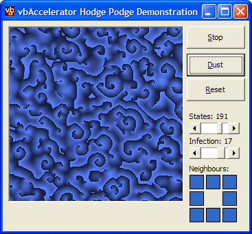
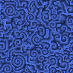
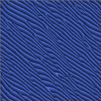

Hodge Podge Algorithm Demonstration (36K)
Hodge Podge Algorithm Demonstration (36K)
 25 Aug 2003
25 Aug 2003
First Posted
 Cellular Automata - Crystal Model
Cellular Automata - Crystal Model

Cellular Automata - Catalytic Reactions
Creating real-time animation effects using two-dimensional cellular automata
This sample shows demonstrates a cellular automata which was initially designed to mimic catalytic reactions and in particular the Belousov-Zhabotinsky or "Clock" reaction. It produces a great variety of continuously varying, wave-like patterns.
The Algorithm
The basic setup for this algorithm is the same as the main Cellular Automata sample, in that it uses a wrap-around cellular space and the state of cells in the next generation are determined from the state of the cells in the current generation. The difference is the algorithm used to determine the new state.
Each cell in the space has n possible states. A cell in state 0 is said to be "healthy" and one in state n -1 is said to be "ill". Cells in states inbetween these two extremes are described as "infected". There are three rules which are applied to generate the next state for a cell, depending on whether it is healthy, infected or ill:
- Healthy Cell
The new state of this cell will depend on the number of infected and ill cells in the neighbourhood of the cell. Two rate parameters are used to set how rapidly infected and ill cells infect the healthy cell:
statet+1 = int( Cinfected / rinfected ) + int ( Cill / rill )
Where C is the count of neighbouring cells of the specified type and r is the rate of infection.
- Infected Cell
The condition of an infected cell worsens over time. There are two components to the infection rate; a general linear infection rate which always applies to infected cells and an infection associated with the number of infected neighbours:
statet+1 = int( S / C ) + g
Where S is the sum of the states of cell itself and all neighbouring cells, C is the count of neighbouring cells and the cell itself and g is the general infection rate.
- Ill Cell
An ill cell becomes healthy at the next step. (This models the sudden loss of reactive power of a chemical agent due to, for example, a phase transition in the material).
A wide variety of different effects can be obtained by modifying which neighbours are considered, the number of states and the rate of infection. A good effect to try when the animation is running is to modify the neighbours: the entire cell "kaliedoscopes" between the existing and the new pattern. Here are some examples of the patterns obtained:
Swirl-like patterns are generated when all 8 neighbouring cells are taken into account.

This layered pattern evolves when the outlying 4 neighbours are set.
Taking a stable pattern and then removing all neighbours except for one row yields lines.
A pattern generated by using an asymmetrical neighbour selection.